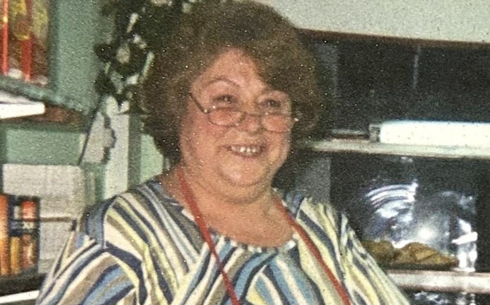
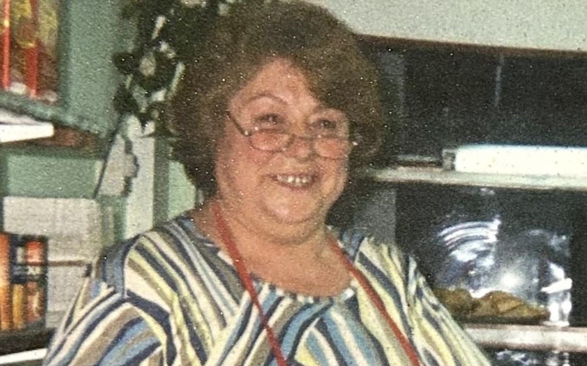

Maria Esther Nieto
Nuestra Fundadora
En 1982, Mari junto a su marido José decidieron realizar su sueño de vivir cerca del mar. Comenzaron con "Lacteos 3", Fiambrería modelo de la época, que marcó el rumbo y selló el logo que nos identifica hoy en día
 
